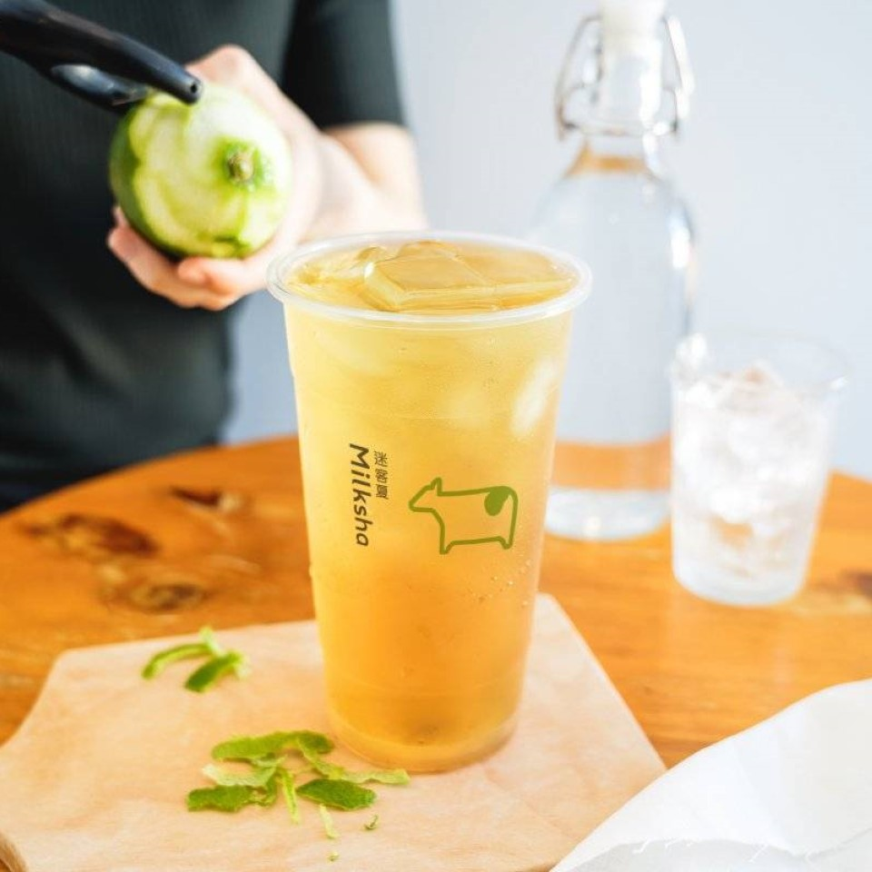
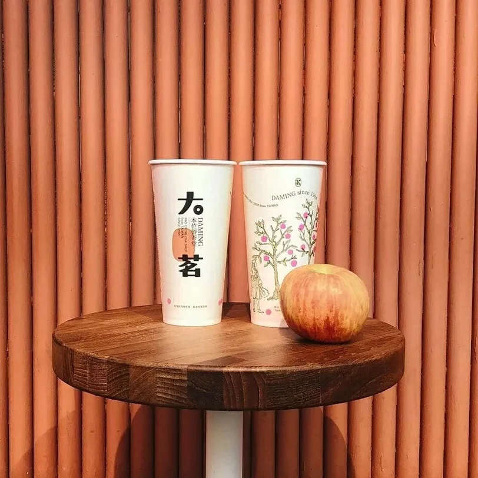
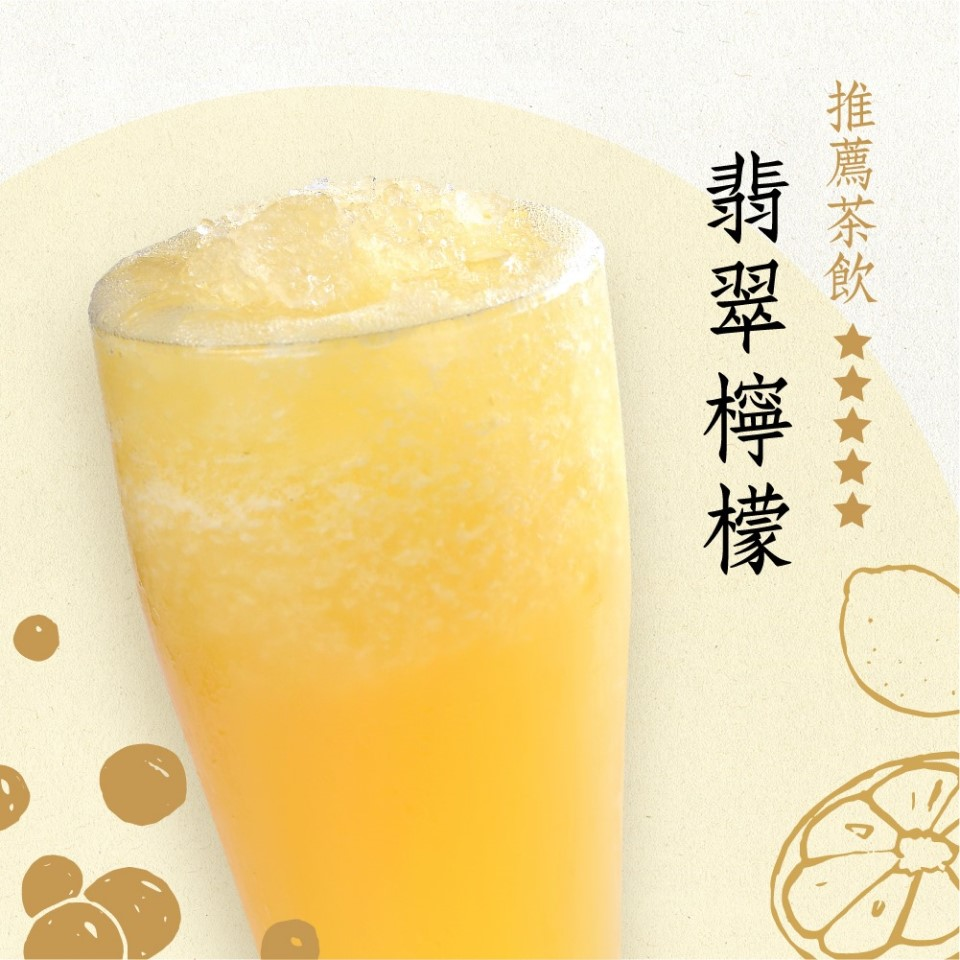
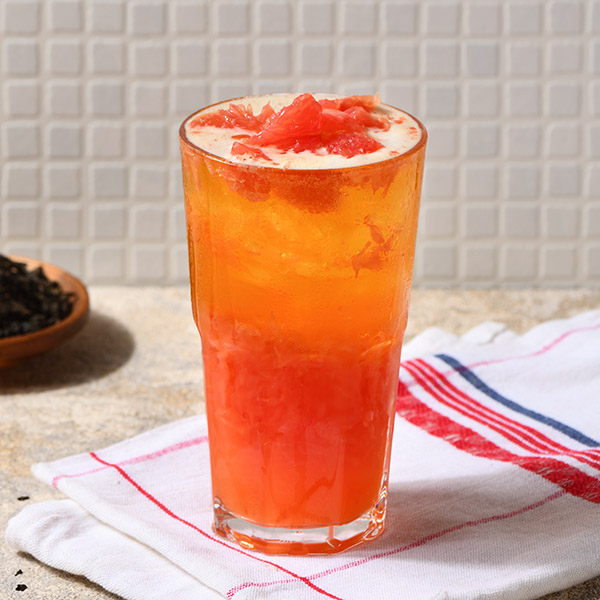
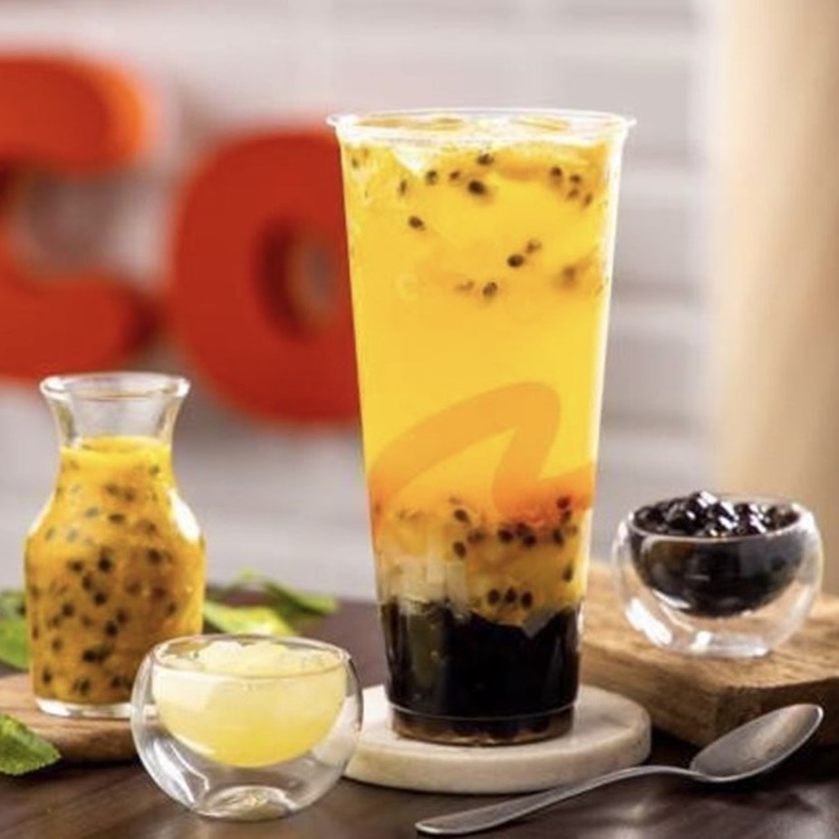
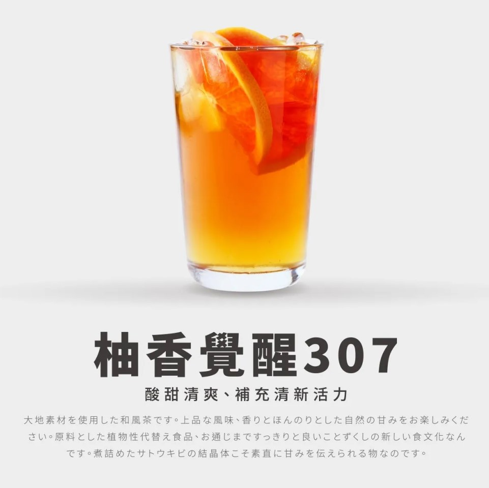

- 首頁
- 喝新鮮
喝新鮮
今天喝什麼?
覺得純茶太單調嗎? 可以嘗試以下飲料，有不同的享受!

×

迷克夏-青檸香茶
採用茉香綠茶加上檸檬皮（而不是檸檬汁），打造出具有檸檬香氣卻不酸的飲品，是怕酸的人品嚐檸檬飲品的好選擇。

×

大茗-蘋果玉露青
使用招牌玉露青茶為基底，加入新鮮蘋果，清爽中散發著清新的蘋果香，融合的剛剛好!亮點是可以得到”蘋果日光變色杯”，照光後會長紅蘋果的杯子超級可愛！

×

茶湯會-翡翠檸檬
以嚴格條件篩選的檸檬製成，挑選關鍵在於白皮，去蕪存菁後保留屏東在地檸檬最好的酸氣，再加上香醇的翡翠綠茶，鮮香清爽的翡翠檸檬製作完成。

×

龜記-紅柚翡翠
每日手挖超限量的新鮮紅柚，果粒滿滿一口接一口，，與清香的翡翠綠茶完美結合，酸甜風味卻沒有柚皮的苦澀，一喝就上癮的好滋味！

×

Coco-百香果雙響炮
酸酸甜甜的百香果茶，吃得到百香果籽，為了增加口感，裡頭還有滿滿的高纖椰果及Q彈珍珠，酸甜又解膩又不怕負擔!

×

八曜和茶-柚香覺醒307
屬於果香系飲品，以307烏龍茶為基底，搭配新鮮完熟甜柚，酸甜的果肉與精緻細膩的茶香交織，喝起來就如同香水般帶有前後味的驚喜！